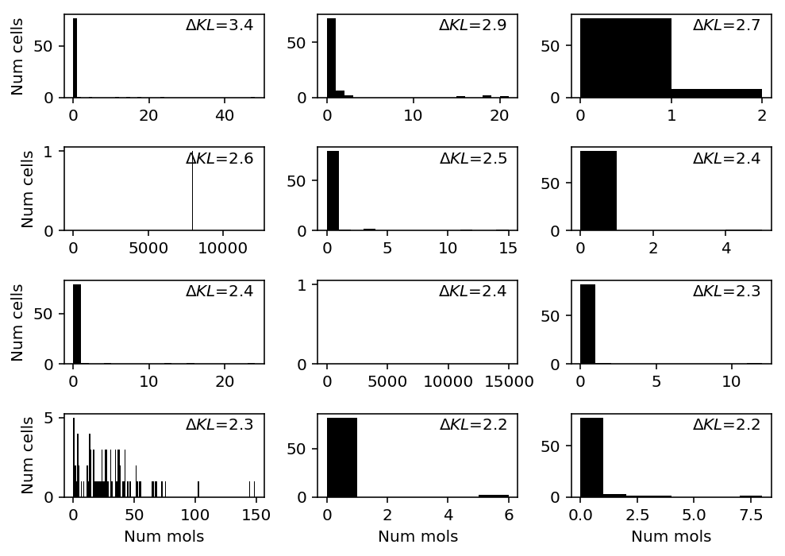
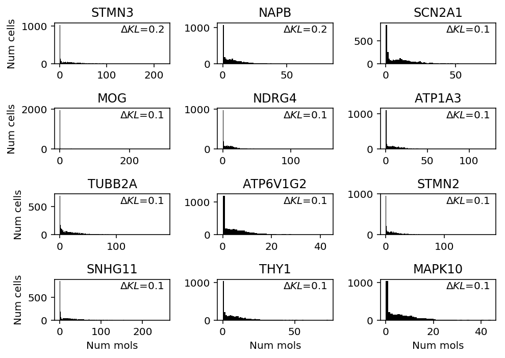

Distribution deconvolution examples
Table of Contents
Setup
import functools as ft import multiprocessing as mp import numpy as np import pandas as pd import scanpy import scipy.stats as st import scipy.special as sp import scmodes import sklearn.model_selection as skms import rpy2.robjects.packages import rpy2.robjects.pandas2ri import rpy2.robjects.numpy2ri rpy2.robjects.pandas2ri.activate() rpy2.robjects.numpy2ri.activate() ashr = rpy2.robjects.packages.importr('ashr') descend = rpy2.robjects.packages.importr('descend')
%matplotlib inline %config InlineBackend.figure_formats = set(['retina'])
import colorcet import matplotlib.pyplot as plt plt.rcParams['figure.facecolor'] = 'w'
Results
Spike-in data
Look at genes favoring more complex models
We are primarily interested in cases where NPMLE does better than unimodal, because these could potentially be cases where zeros drive the difference in generalization performance.
chromium1 = data['chromium1']() llik_diff = benchmark['chromium1']['npmle'] - benchmark['chromium1']['unimodal'] query = llik_diff[np.logical_and(chromium1.sum(axis=0) > 0, llik_diff > 0)].sort_values(ascending=False).head(n=12).index plt.clf() fig, ax = plt.subplots(4, 3) fig.set_size_inches(7, 5) for a, k in zip(ax.ravel(), query): a.hist(chromium1[:,k], bins=np.arange(chromium1[:,k].max() + 2), color='k') a.text(x=.95, y=.95, s=f"$\Delta l$={llik_diff.loc[k]:.1f}", horizontalalignment='right', verticalalignment='top', transform=a.transAxes) for y in range(ax.shape[0]): ax[y][0].set_ylabel('Num cells') for x in range(ax.shape[1]): ax[-1][x].set_xlabel('Num mols') fig.tight_layout()

chromium2 = data['chromium2']() llik_diff = benchmark['chromium2']['npmle'] - benchmark['chromium2']['unimodal'] query = llik_diff[np.logical_and(chromium2.sum(axis=0) > 0, llik_diff > 0)].sort_values(ascending=False).head(n=12).index
plt.clf() fig, ax = plt.subplots(4, 3) fig.set_size_inches(7, 5) for a, k in zip(ax.ravel(), query): a.hist(chromium2[:,k], bins=np.arange(chromium2[:,k].max() + 2), color='k') a.text(x=.95, y=.95, s=f"$\Delta l$={llik_diff.loc[k]:.1f}", horizontalalignment='right', verticalalignment='top', transform=a.transAxes) for y in range(ax.shape[0]): ax[y][0].set_ylabel('Num cells') for x in range(ax.shape[1]): ax[-1][x].set_xlabel('Num mols') fig.tight_layout()

Look at the distribution of size factors.
s = chromium2.sum(axis=1)
plt.clf() plt.gcf().set_size_inches(3, 3) plt.hist(s, color='k', bins=100) plt.axvline(x=1000, c='r', lw=1, ls=':') plt.xlabel('Size factor') plt.ylabel('Number of cells') plt.tight_layout()

Show that the bimodal distribution of counts is totally explained by the bimodal distribution of size factors.
plt.clf() fig, ax = plt.subplots(4, 3) fig.set_size_inches(7, 5) for a, k in zip(ax.ravel(), query): n, *_ = a.hist(chromium2[s < 1000,k], bins=np.arange(chromium2[:,k].max() + 2), color='k') a.hist(chromium2[s >= 1000,k], bottom=n, bins=np.arange(chromium2[:,k].max() + 2), color='r') a.text(x=.95, y=.95, s=f"$\Delta l$={llik_diff.loc[k]:.1f}", horizontalalignment='right', verticalalignment='top', transform=a.transAxes) for y in range(ax.shape[0]): ax[y][0].set_ylabel('Num cells') for x in range(ax.shape[1]): ax[-1][x].set_xlabel('Num mols') fig.tight_layout()
dropseq = data['dropseq']() llik_diff = benchmark['dropseq']['npmle'] - benchmark['dropseq']['unimodal'] query = benchmark['dropseq'].loc[llik_diff[llik_diff > 0].sort_values(ascending=False).head(n=12).index].index plt.clf() fig, ax = plt.subplots(4, 3) fig.set_size_inches(7, 5) for a, k in zip(ax.ravel(), query): a.hist(dropseq[:,k], bins=np.arange(dropseq[:,k].max() + 2), color='k') a.text(x=.95, y=.95, s=f"$\Delta l$={llik_diff.loc[k]:.1f}", horizontalalignment='right', verticalalignment='top', transform=a.transAxes) for y in range(ax.shape[0]): ax[y][0].set_ylabel('Num cells') for x in range(ax.shape[1]): ax[-1][x].set_xlabel('Num mols') fig.tight_layout()

gemcode = data['gemcode']() llik_diff = benchmark['gemcode']['npmle'] - benchmark['gemcode']['unimodal'] query = llik_diff[np.logical_and(gemcode.sum(axis=0) > 0, llik_diff > 0)].sort_values(ascending=False).head(n=12).index plt.clf() fig, ax = plt.subplots(4, 3) fig.set_size_inches(7, 5) for a, k in zip(ax.ravel(), query): a.hist(gemcode[:,k], bins=np.arange(gemcode[:,k].max() + 2), color='k') a.text(x=.95, y=.95, s=f"$\Delta l$={llik_diff.loc[k]:.1f}", horizontalalignment='right', verticalalignment='top', transform=a.transAxes) for y in range(ax.shape[0]): ax[y][0].set_ylabel('Num cells') for x in range(ax.shape[1]): ax[-1][x].set_xlabel('Num mols') fig.tight_layout()

indrops = data['indrops']() llik_diff = benchmark['indrops']['npmle'] - benchmark['indrops']['unimodal'] query = llik_diff[np.logical_and(indrops.sum(axis=0) > 0, llik_diff > 0)].sort_values(ascending=False).head(n=12).index plt.clf() fig, ax = plt.subplots(4, 3) fig.set_size_inches(7, 5) for a, k in zip(ax.ravel(), query): a.hist(indrops[:,k], bins=np.arange(indrops[:,k].max() + 2), color='k') a.text(x=.95, y=.95, s=f"$\Delta l$={llik_diff.loc[k]:.1f}", horizontalalignment='right', verticalalignment='top', transform=a.transAxes) for y in range(ax.shape[0]): ax[y][0].set_ylabel('Num cells') for x in range(ax.shape[1]): ax[-1][x].set_xlabel('Num mols') fig.tight_layout()
Homogeneous populations
Investigate genes with support for more complex models
Read gene metadata.
gene_info = pd.read_csv('/project2/mstephens/aksarkar/projects/singlecell-qtl/data/scqtl-genes.txt.gz', sep='\t', index_col=0)
Focus on cases where NPMLE does better than unimodal. Look at B cells.
b_cells = scmodes.dataset.read_10x('/project2/mstephens/aksarkar/projects/singlecell-ideas/data/10xgenomics/b_cells/filtered_matrices_mex/hg19/', return_df=True) llik_diff = benchmark['b_cells']['npmle'] - benchmark['b_cells']['gamma'] query = llik_diff[llik_diff > 0].sort_values(ascending=False).head(n=12).index
plt.clf() fig, ax = plt.subplots(3, 4) fig.set_size_inches(7, 5) for a, k in zip(ax.ravel(), query): a.hist(b_cells.loc[:,k], bins=np.arange(b_cells.loc[:,k].max() + 1), color='k') a.text(x=.95, y=.95, s=f"$\Delta l$={benchmark['b_cells']['npmle'].loc[k] - benchmark['b_cells']['gamma'].loc[k]:.1f}", horizontalalignment='right', verticalalignment='top', transform=a.transAxes) a.set_title(gene_info.loc[k, 'name'] if k in gene_info.index else k) for y in range(ax.shape[0]): ax[y][0].set_ylabel('Num cells') for x in range(ax.shape[1]): ax[-1][x].set_xlabel('Num mols') fig.tight_layout()

In T cells, several genes appear to be best fit by ZIEF.
cytotoxic_t = scmodes.dataset.read_10x('/project2/mstephens/aksarkar/projects/singlecell-ideas/data/10xgenomics/cytotoxic_t/filtered_matrices_mex/hg19/', return_df=True) llik_diff = benchmark['cytotoxic_t']['zief'] - benchmark['cytotoxic_t']['gamma'] query = llik_diff[llik_diff > 0].sort_values(ascending=False).head(n=12).index
plt.clf() fig, ax = plt.subplots(4, 3) fig.set_size_inches(7, 5) for a, k in zip(ax.ravel(), query): a.hist(cytotoxic_t.loc[:,k], bins=np.arange(cytotoxic_t.loc[:,k].max() + 1), color='k') a.text(x=.95, y=.95, s=f"$\Delta l$={benchmark['cytotoxic_t']['zief'].loc[k] - benchmark['cytotoxic_t']['gamma'].loc[k]:.1f}", horizontalalignment='right', verticalalignment='top', transform=a.transAxes) a.set_title(gene_info.loc[k, 'name'] if k in gene_info.index else k) for y in range(ax.shape[0]): ax[y][0].set_ylabel('Num cells') for x in range(ax.shape[1]): ax[-1][x].set_xlabel('Num mols') fig.tight_layout()
CCL5 appears to have bimodal expression. Look at how other methods performed on CCL5.
benchmark['cytotoxic_t'].loc['ENSG00000161570']
gamma -2169.540390 point_gamma -2119.179861 unimodal -2108.054069 zief -2112.490970 npmle -2116.571337 Name: ENSG00000161570, dtype: float64
In iPSCs, several genes appear to be better fit by unimodal/NPMLE.
ipsc_counts = scmodes.dataset.ipsc('/project2/mstephens/aksarkar/projects/singlecell-qtl/data/', n=100, return_df=True)
query = benchmark['ipsc'][benchmark['ipsc']['unimodal'] > benchmark['ipsc']['gamma']].index plt.clf() fig, ax = plt.subplots(8, 5) fig.set_size_inches(8, 10) for a, k in zip(ax.ravel(), query): h = a.hist(ipsc_counts.loc[:,k], bins=np.arange(ipsc_counts.loc[:,k].max() + 1), color='k') a.text(x=.95, y=.95, s=f"$\Delta l$={benchmark['ipsc']['unimodal'].loc[k] - benchmark['ipsc']['gamma'].loc[k]:.1f}", horizontalalignment='right', verticalalignment='top', transform=a.transAxes) a.set_title(gene_info.loc[k, 'name']) for y in range(ax.shape[0]): ax[y][0].set_ylabel('Num cells') for x in range(ax.shape[1]): ax[-1][x].set_xlabel('Num mols') fig.tight_layout()

- SLC25A5 (Solute carrier family 25 member 5) codes for a mitochrondrial membrane protein (Rocha et al. 2018), and is altered in Parkinson's disease
- TXNDC17 (Thioredoxin domain-containing protein 17) appears to be involved in oxidative stress
- PCBP2 (Poly(rC)-binding protein 2) is involved in post-transcriptional regulation
llik_diff = benchmark['ipsc']['npmle'] - benchmark['ipsc']['gamma'] query = benchmark['ipsc'].loc[llik_diff > 0].index plt.clf() fig, ax = plt.subplots(9, 5) fig.set_size_inches(8, 10) for a, k in zip(ax.ravel(), query): a.hist(ipsc_counts.loc[:,k], bins=np.arange(ipsc_counts.loc[:,k].max() + 1), color='k') a.text(x=.95, y=.95, s=f"$\Delta l$={llik_diff.loc[k]:.1f}", horizontalalignment='right', verticalalignment='top', transform=a.transAxes) a.set_title(gene_info.loc[k, 'name']) for y in range(ax.shape[0]): ax[y][0].set_ylabel('Num cells') for x in range(ax.shape[1]): ax[-1][x].set_xlabel('Num mols') fig.tight_layout()

Conclusions:
- ZIEF does better for genes which appear very close to Poisson. This could be because it the estimation algorithm can better estimate a point mass, or because two point masses (one zero and one non-zero) would be optimal.
- When NPMLE does better than Gamma, unimodal does comparably well. The genes where this happens quite clearly exhibit unimodal gene expression.
Investigate Gamma vs. Point-Gamma in high-depth data
Look at the full benchmark results for NB vs. ZINB (only the GPU implementation is suitable for this).
plt.clf() plt.gcf().set_size_inches(3, 3) h = plt.hist(ipsc_res['zinb'] - ipsc_res['nb'], color='k', bins=np.arange(-10, 40, 2)) plt.xlabel('Diff val set log lik from NB') _ = plt.ylabel('Number of genes')

Print the histogram for inspection.
np.vstack((h[1][:-1], h[0])).T.astype(int)
array([[ -10, 0], [ -8, 0], [ -6, 0], [ -4, 0], [ -2, 4977], [ 0, 4973], [ 2, 2], [ 4, 3], [ 6, 0], [ 8, 0], [ 10, 0], [ 12, 0], [ 14, 1], [ 16, 0], [ 18, 0], [ 20, 0], [ 22, 0], [ 24, 0], [ 26, 0], [ 28, 1], [ 30, 0], [ 32, 0], [ 34, 0], [ 36, 0]])
Try to find a case in the full iPSC data where point-Gamma (ZINB) is required, by performing likelihood ratio tests against Gamma (NB). Use Bonferroni correction to control FWER.
ipsc_res = pd.read_csv('/project2/mstephens/aksarkar/projects/singlecell-modes/data/deconv-generalization/ipsc-gpu.txt.gz', index_col=0, sep='\t') lrt = st.chi2(1).sf(-2 * (ipsc_res['gamma'] - ipsc_res['point_gamma'])) ipsc_res[lrt < .05 / lrt.shape[0]]
gamma point_gamma gene ENSG00000112530 -2017.717750 -1987.894352 ENSG00000129824 -1803.651932 -1789.106410
ipsc_counts = ipsc(query=list(ipsc_res[lrt < .05 / lrt.shape[0]].index), return_df=True)
plt.clf() fig, ax = plt.subplots(1, 2) fig.set_size_inches(6, 3) for a, k in zip(ax, ipsc_counts): h = a.hist(ipsc_counts[k], bins=np.arange(ipsc_counts[k].max() + 1), color='k') a.set_title(gene_info.loc[k, 'name']) a.set_xlabel('Number of molecules') a.set_ylabel('Number of cells') fig.tight_layout()

Print out the histogram for RPS4Y1 for inspection.
np.vstack((h[1][:-1], h[0])).T
array([[ 0., 803.], [ 1., 309.], [ 2., 435.], [ 3., 407.], [ 4., 383.], [ 5., 323.], [ 6., 323.], [ 7., 239.], [ 8., 163.], [ 9., 166.], [ 10., 132.], [ 11., 98.], [ 12., 97.], [ 13., 106.], [ 14., 95.], [ 15., 95.], [ 16., 94.], [ 17., 109.], [ 18., 92.], [ 19., 89.], [ 20., 87.], [ 21., 83.], [ 22., 100.], [ 23., 75.], [ 24., 71.], [ 25., 60.], [ 26., 61.], [ 27., 60.], [ 28., 60.], [ 29., 34.], [ 30., 50.], [ 31., 41.], [ 32., 34.], [ 33., 38.], [ 34., 28.], [ 35., 23.], [ 36., 19.], [ 37., 18.], [ 38., 11.], [ 39., 7.], [ 40., 17.], [ 41., 8.], [ 42., 12.], [ 43., 7.], [ 44., 4.], [ 45., 11.], [ 46., 4.], [ 47., 2.], [ 48., 1.], [ 49., 3.], [ 50., 1.], [ 51., 1.], [ 52., 2.], [ 53., 1.], [ 54., 1.], [ 55., 1.], [ 56., 2.], [ 57., 0.], [ 58., 0.], [ 59., 0.], [ 60., 0.], [ 61., 0.], [ 62., 0.], [ 63., 0.], [ 64., 0.], [ 65., 1.]])
PACRG (Parkin coregulated gene) shares a promoter with PKRG (PARK2; Parkin). PARKIN is involved in a signaling pathway for mitochondria damage, and mitochrondrial damage appears to be relevant to neurodegenerative disease etiology (Alzheimer's disease and Parkinson's disease). Mitochrondrial damage could explain the bimodal distribution of PACRG in the iPSC data: the reprogramming protocol could induce oxidative stress on some of the cells, resulting in damage.
RPS4Y1 (Ribosomal protein S4, Y-linked) is on the Y chromosome, and therefore we should expect it to only be expressed in males. The homologous gene on the X chromosome (RPS4X) has a different coding sequence. Naively, sex-linkage should explain why this gene exhibits bimodal gene expression.
curl -OL 'http://ftp.1000genomes.ebi.ac.uk/vol1/ftp/technical/working/20130606_sample_info/20130606_sample_info.txt'
donor_info = pd.read_csv('/project2/mstephens/aksarkar/projects/singlecell-modes/data/20130606_sample_info.txt', sep='\t')
Count how many cells come from females.
prefix = '/project2/mstephens/aksarkar/projects/singlecell-qtl/data/' annotations = pd.read_csv(f'{prefix}/scqtl-annotation.txt', sep='\t') keep_samples = pd.read_csv(f'{prefix}/quality-single-cells.txt', sep='\t', index_col=0, header=None) annotations = annotations.loc[keep_samples.values.ravel()]
annotations.merge(donor_info, left_on='chip_id', right_on='Sample')['Gender'].value_counts()
female 3109 male 2369 Name: Gender, dtype: int64
Look at the fitted ZINB distribution per-individual for this gene.
ipsc_log_mu = pd.read_csv('/project2/mstephens/aksarkar/projects/singlecell-qtl/data/density-estimation/design1/zi2-log-mu.txt.gz', sep=' ', index_col=0) ipsc_log_phi = pd.read_csv('/project2/mstephens/aksarkar/projects/singlecell-qtl/data/density-estimation/design1/zi2-log-phi.txt.gz', sep=' ', index_col=0) ipsc_logodds = pd.read_csv('/project2/mstephens/aksarkar/projects/singlecell-qtl/data/density-estimation/design1/zi2-logodds.txt.gz', sep=' ', index_col=0)
def point_gamma_cdf(grid, log_mu, log_phi, logodds): res = st.gamma(a=np.exp(-log_phi), scale=np.exp(log_mu + log_phi)).cdf(grid) res *= sp.expit(-logodds) res += sp.expit(logodds) return res lam = ipsc_counts.values / annotations['mol_hs'].values.reshape(-1, 1) grid = np.linspace(lam.min(), lam.max(), 1000) cdfs = np.array([[point_gamma_cdf(grid, ipsc_log_mu.loc[j, k], ipsc_log_phi.loc[j, k], ipsc_logodds.loc[j, k]) for k in ipsc_log_mu] for j in ipsc_counts.columns if j != list(ipsc_log_mu.columns).index('NA18498')])
plt.clf() fig, ax = plt.subplots(2, 1, sharex=True) fig.set_size_inches(6, 4) for a, F, k in zip(ax, cdfs, ipsc_counts.columns): for f in F: a.set_xlim(0, 2e-4) a.set_xticks(np.linspace(0, 2e-4, 3)) a.plot(grid, f, c='k', lw=1, alpha=0.2) a.set_title(gene_info.loc[k, 'name']) a.set_ylabel('CDF') ax[-1].set_xlabel('Latent gene expression') fig.tight_layout()

Plot the estimated RPS4Y1 latent gene expression, stratified by donor sex.
colors = {k: 'r' if v == 'male' else 'b' for k, v in donor_info.set_index('Sample') .filter(items=list(ipsc_log_mu.columns), axis=0) ['Gender'] .iteritems()} plt.clf() plt.gcf().set_size_inches(3, 2) for f, k in zip(cdfs[1], ipsc_log_mu.columns): plt.xlim(0, 2e-4) plt.xticks(np.linspace(0, 2e-4, 3)) plt.plot(grid, f, lw=1, alpha=0.2, c=colors.get(k, 'k')) dummy = [plt.Line2D([0], [0], c='r'), plt.Line2D([0], [0], c='b')] plt.legend(dummy, ['Male', 'Female'], frameon=False) plt.title('RPS4Y1') plt.ylabel('CDF') plt.xlabel('Latent gene expression')

Synthetic mixtures
Investigate genes favoring more complex models
Read the data.
t_cells = scmodes.dataset.read_10x('/project2/mstephens/aksarkar/projects/singlecell-ideas/data/10xgenomics/cytotoxic_t/filtered_matrices_mex/hg19/', return_df=True) b_cells = scmodes.dataset.read_10x('/project2/mstephens/aksarkar/projects/singlecell-ideas/data/10xgenomics/b_cells/filtered_matrices_mex/hg19/', return_df=True) mix1, y1 = scmodes.dataset.synthetic_mix(t_cells, b_cells) cyto = scmodes.dataset.read_10x(prefix='/project2/mstephens/aksarkar/projects/singlecell-ideas/data/10xgenomics/cytotoxic_t/filtered_matrices_mex/hg19', return_df=True) naive = scmodes.dataset.read_10x(prefix='/project2/mstephens/aksarkar/projects/singlecell-ideas/data/10xgenomics/naive_cytotoxic/filtered_matrices_mex/hg19', return_df=True) mix2, y2 = scmodes.dataset.synthetic_mix(cyto, naive)
Look at genes in the T cell/B cell mix where NPMLE has higher validation set log likelihood than NB.
llik_diff = benchmark['cd8-cd19-mix']['npmle'] - benchmark['cd8-cd19-mix']['gamma'] query = benchmark['cd8-cd19-mix'].loc[llik_diff[llik_diff > 0].sort_values(ascending=False).head(n=12).index].index
plt.clf() fig, ax = plt.subplots(3, 4) fig.set_size_inches(8, 6) for a, k in zip(ax.ravel(), query): a.hist(mix1.iloc[:,k], bins=np.arange(mix1.iloc[:,k].max() + 1), color='k') a.text(x=.95, y=.95, s=f"$\Delta l$={benchmark['cd8-cd19-mix']['npmle'].loc[k] - benchmark['cd8-cd19-mix']['gamma'].loc[k]:.1f}", horizontalalignment='right', verticalalignment='top', transform=a.transAxes) a.set_title(gene_info.loc[mix1.columns[k], 'name'] if mix1.columns[k] in gene_info.index else mix1.columns[k]) for a in ax: a[0].set_ylabel('Num cells') for a in ax.T: a[-1].set_xlabel('Num mols') fig.tight_layout()

Look at CD74 gene expression, stratified by known cell type.
plt.clf() fig, ax = plt.subplots(1, 2, sharey=True) fig.set_size_inches(5, 2) for i, a in enumerate(ax): a.hist(mix1.loc[y1 == i,mix1.columns[query[0]]], bins=np.arange(mix1.loc[:,mix1.columns[query[0]]].max() + 1), color='k') a.set_title(['B cells', 'T cells'][i]) a.set_xlabel('Number of molecules') ax[0].set_ylabel('Number of cells')
Text(0, 0.5, 'Number of cells')
Look at genes in the Cytotoxic/naive T cell mix where NPMLE has higher validation set log likelihood than NB.'
llik_diff = benchmark['cyto-naive-t-mix']['npmle'] - benchmark['cyto-naive-t-mix']['gamma'] query = benchmark['cyto-naive-t-mix'].loc[llik_diff[llik_diff > 0].sort_values(ascending=False).head(n=12).index].index
Count how many genes this is the case for.
benchmark['cyto-naive-t-mix'].loc[llik_diff > 0].shape[0]
240
plt.clf() fig, ax = plt.subplots(3, 4) fig.set_size_inches(8, 6) for a, k in zip(ax.ravel(), query): a.hist(mix2.loc[:,k], bins=np.arange(mix2.loc[:,k].max() + 1), color='k') a.text(x=.95, y=.95, s=f"$\Delta l$={benchmark['cyto-naive-t-mix']['npmle'].loc[k] - benchmark['cyto-naive-t-mix']['gamma'].loc[k]:.1f}", horizontalalignment='right', verticalalignment='top', transform=a.transAxes) a.set_title(gene_info.loc[k, 'name'] if k in gene_info.index else k) for a in ax: a[0].set_ylabel('Num cells') for a in ax.T: a[-1].set_xlabel('Num mols') fig.tight_layout()

MALAT1 (Metastasis-associated lung adenocarcinoma transcript 1) is a lincRNA which appears to show tri-modal gene expression in this mixture. It is involved in T cell activation, through interaction with NF-B (Zhao et al. 2016).
Stratify MALAT1 gene expression by known cell type.
plt.clf() fig, ax = plt.subplots(1, 2, sharey=True) fig.set_size_inches(5, 2) for i, a in enumerate(ax): a.hist(mix2.loc[y2 == i,'ENSG00000251562'], bins=np.arange(mix2.loc[:,'ENSG00000251562'].max() + 1), color='k') a.set_title(['Naive T cells', 'Cytotoxic T cells'][i]) a.set_xlabel('Number of molecules') ax[0].set_ylabel('Number of cells')
Text(0, 0.5, 'Number of cells')
Heterogeneous populations
Genes favoring more complex models
Look at the genes where ZIG shows the most gain in validation set log likelihood.
import scmodes work = scmodes.dataset.cortex('/project2/mstephens/aksarkar/projects/singlecell-ideas/data/zeisel-2015/GSE60361_C1-3005-Expression.txt.gz', return_df=True) work.to_csv('/project2/mstephens/aksarkar/projects/singlecell-ideas/data/zeisel-2015/zeisel-2015.txt.gz', compression='gzip', sep='\t')
sbatch --partition=broadwl --mem=16G #!/bin/bash source activate scmodes python <<EOF <<fix-cortex>> EOF
cortex_counts = pd.read_csv('/project2/mstephens/aksarkar/projects/singlecell-ideas/data/zeisel-2015/zeisel-2015.txt.gz', sep='\t', index_col=0)
llik_diff = benchmark['cortex']['point_gamma'] - benchmark['cortex']['gamma'] query = benchmark['cortex'].loc[llik_diff[llik_diff > 0].sort_values(ascending=False).head(n=12).index].index plt.clf() fig, ax = plt.subplots(4, 3) fig.set_size_inches(7, 5) for a, k in zip(ax.ravel(), query): a.hist(cortex_counts.loc[:,k], bins=np.arange(cortex_counts.loc[:,k].max() + 1), color='k') a.text(x=.95, y=.95, s=f"$\Delta l$={llik_diff.loc[k]:.1f}", horizontalalignment='right', verticalalignment='top', transform=a.transAxes) a.set_title(k.upper()) for y in range(ax.shape[0]): ax[y][0].set_ylabel('Num cells') for x in range(ax.shape[1]): ax[-1][x].set_xlabel('Num mols') fig.tight_layout()

Look at genes where unimodal shows greatest performance gain.
llik_diff = benchmark['cortex']['unimodal'] - benchmark['cortex']['gamma'] query = benchmark['cortex'].loc[llik_diff[llik_diff > 0].sort_values(ascending=False).head(n=12).index].index plt.clf() fig, ax = plt.subplots(4, 3) fig.set_size_inches(7, 5) for a, k in zip(ax.ravel(), query): a.hist(cortex_counts.loc[:,k], bins=np.arange(cortex_counts.loc[:,k].max() + 1), color='k') a.text(x=.95, y=.95, s=f"$\Delta l$={llik_diff.loc[k]:.1f}", horizontalalignment='right', verticalalignment='top', transform=a.transAxes) a.set_title(k.upper()) for y in range(ax.shape[0]): ax[y][0].set_ylabel('Num cells') for x in range(ax.shape[1]): ax[-1][x].set_xlabel('Num mols') fig.tight_layout()
Show genes where NPMLE shows greatest performance gain.
llik_diff = benchmark['cortex']['npmle'] - benchmark['cortex']['gamma'] query = benchmark['cortex'].loc[llik_diff[llik_diff > 0].sort_values(ascending=False).head(n=12).index].index plt.clf() fig, ax = plt.subplots(4, 3) fig.set_size_inches(7, 5) for a, k in zip(ax.ravel(), query): a.hist(cortex_counts.loc[:,k], bins=np.arange(cortex_counts.loc[:,k].max() + 1), color='k') a.text(x=.95, y=.95, s=f"$\Delta l$={llik_diff.loc[k]:.1f}", horizontalalignment='right', verticalalignment='top', transform=a.transAxes) a.set_title(k.upper()) for y in range(ax.shape[0]): ax[y][0].set_ylabel('Num cells') for x in range(ax.shape[1]): ax[-1][x].set_xlabel('Num mols') fig.tight_layout()

- GPM6A (Glycoprotein m6a) appears to be required for mouse brain develoment, and is expressed in specific brain regions
- SCN2A (Sodium channel, voltage-gated, type II, alpha) is needed for propagating actions potentials in neurons
Stratify the gene expression of these genes by inferred cell type.
curl -sLO "https://storage.googleapis.com/linnarsson-lab-www-blobs/blobs/cortex/expression_mRNA_17-Aug-2014.txt"
gzip expression_mRNA_17-Aug-2014.txt
cortex_celltypes = (pd.read_csv('/project2/mstephens/aksarkar/projects/singlecell-ideas/data/zeisel-2015/expression_mRNA_17-Aug-2014.txt.gz', sep='\t', header=None, index_col=0, nrows=10) .reset_index(drop=True) .set_index(1))
plt.clf() fig, ax = plt.subplots(3, 3) fig.set_size_inches(6, 6) for a, k in zip(ax.ravel(), set(cortex_celltypes.loc['level1class'])): x = cortex_counts.loc[(cortex_celltypes.loc['level1class'] == k).values, 'Gpm6a'] a.hist(x, bins=np.arange(x.max() + 1), color='k') a.set_title(k) for a in ax: a[0].set_ylabel('Num cells') for a in ax.T: a[-1].set_xlabel('Num mols') fig.tight_layout()
plt.clf() fig, ax = plt.subplots(3, 3) fig.set_size_inches(6, 6) for a, k in zip(ax.ravel(), set(cortex_celltypes.loc['level1class'])): x = cortex_counts.loc[(cortex_celltypes.loc['level1class'] == k).values, 'Scn2a1'] a.hist(x, bins=np.arange(x.max() + 1), color='k') a.set_title(k) for a in ax: a[0].set_ylabel('Num cells') for a in ax.T: a[-1].set_xlabel('Num mols') fig.tight_layout()